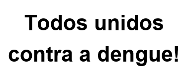

Sobre mim
Meu nome é Leonardo, e atualmente, atuo como analista de processos, custos e orçamentista em uma indústria de estampagem mecânica. Sou formado em engenharia mecânica e estou atualmente estou buscando novos horizontes, incluindo o desafio de estudar programação.
Além disso, sou um entusiasta de atividades físicas, incluindo musculação, crossfit e natação. Sou um apaixonado por esportes, sempre que possivel assisto jogos de futebol, futebol americano e basquete. Além disso, também adoro passar horas jogando jogos online e de tabuleiro.
Formações Acadêmicas
- Análise e Desenvolvimento de Sistemas
Uninter - Cursando, previsão de término em 06/2025. - Bacharelado em Engenharia Mecânica
UTFPR (Universidade Tecnológica Federal do Paraná) - Concluído em 2021. - Técnico em Mecânica
IFPR (Instituto Federla do Paraná) - Concluido em 2013.
Portfólio
Abaixo segue meu portfólio de desenvolvimento de websites.
Contato
 leonardovicintin@gmail.com
leonardovicintin@gmail.com (41) 99800-7471
(41) 99800-7471 LinkedIn
LinkedIn